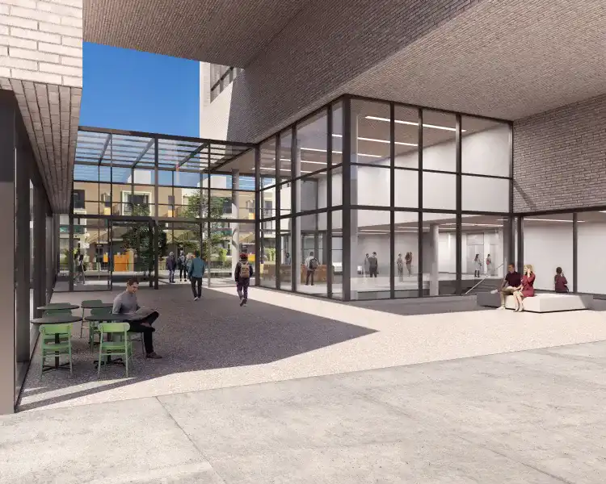

Musée de l'Holocauste
Le Musée de l'Holocauste de Montréal est une institution poignante dédiée à la mémoire des victimes de l'Holocauste et à la préservation de l'histoire de cette période sombre. Niché dans le quartier historique du Mile End à Montréal, le musée offre une expérience immersive unique, tant par son contenu que par son architecture soigneusement conçue. Situé au cœur du quartier Mile End, le musée trouve sa place au sein d'une communauté dynamique. Son architecture, sobre et respectueuse, se fond dans le tissu urbain tout en attirant l'attention par sa simplicité éloquente.
L'entrée du musée est marquée par une architecture emblématique. Une façade de verre symbolise la transparence et l'ouverture, invitant les visiteurs à entrer dans un espace qui encourage la réflexion et la commémoration. L'intérieur du musée est conçu de manière à créer une expérience visuelle et émotionnelle profonde. Des salles d'exposition épurées et des espaces d'histoire interactive guident les visiteurs à travers le récit de l'Holocauste, offrant des perspectives variées et des témoignages personnels.